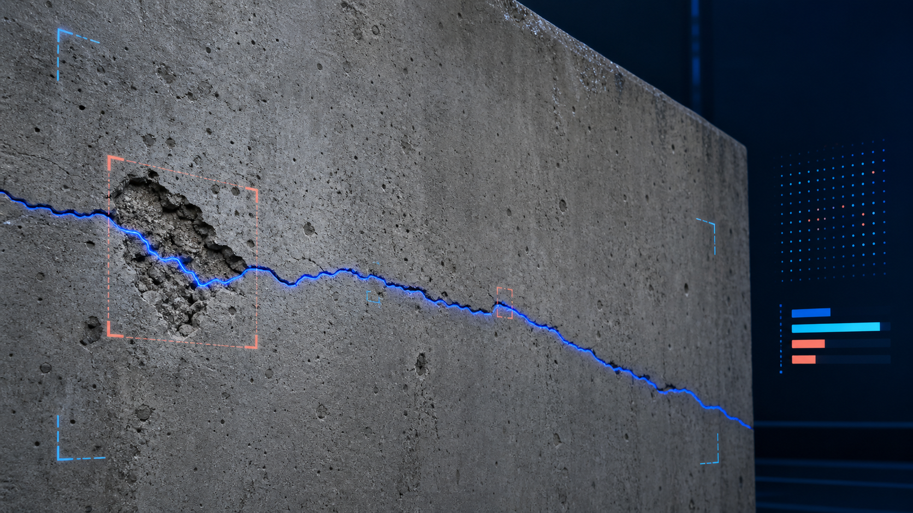

팀 리딩과 시스템 설계
프로젝트 기획, 일정 및 38개 WBS Task를 관리하고 Classification–Segmentation 모델과 서비스의 전체 연결 구조를 설계.
Crack Sensing AI Service
노후 시설물 이미지의 결함 종류를 분류하고 Pixel 단위 위치를 탐지하는 딥러닝 기반 안전 진단 서비스.

00 / OVERVIEW
분류 모델은 ‘어떤 결함인가’를 후보로 판별하고, Semantic Segmentation은 ‘결함이 어디에 있는가’를 픽셀 단위로 찾는다. 단일 Label과 누락 Annotation이 공존하는 데이터의 한계를 모델 구조와 Loss 설계에 반영하고, 학습 모델을 컨테이너 기반 AI 서버로 연결했다.
HOW IT WORKS
사용자가 결함이 의심되는 시설물 이미지를 서비스에 등록합니다.
추론 규격에 맞게 이미지를 변환하고 분류 모델에 전달합니다.
EfficientNet의 11차원 Raw Logit을 Sigmoid Score로 변환하고, 0.5 이상의 후보를 보존합니다.
SegFormer가 11개 클래스의 Sigmoid Score Vector를 Hint로 받아 결함 영역을 예측합니다.
결함별 픽셀 Mask와 클래스 정보를 서비스 응답으로 변환합니다.
사용자가 탐지 이미지와 결함 정보를 확인하고 시설물 분석 기록으로 저장합니다.
01 / CONTRIBUTION
팀 운영과 연구 설계부터 학습·통합까지 순서대로 수행한 범위.
프로젝트 기획, 일정 및 38개 WBS Task를 관리하고 Classification–Segmentation 모델과 서비스의 전체 연결 구조를 설계.
AI Hub 시설물 결함 데이터 472,495장의 클래스 및 Label 분포를 분석하고, 과도한 균열 클래스에 Undersampling 적용.
EfficientNet·ResNet·MobileNet 비교 실험 후 분류기를 선정하고, 클래스별 Sigmoid Score를 SegFormer에 전달하는 Cascade와 Custom Loss 구현.
AI 추론 결과를 서버 흐름에 연결하고 통합 테스트를 수행. AI 서버 Docker 이미지를 구성하고 Cloud 담당 팀원과 협업해 ECR·EKS 서빙 환경에 통합.
02 / DATASET
클래스 수와 Pixel 분포의 불균형뿐 아니라, 한 이미지의 복수 결함과 누락 Annotation까지 학습 설계에 반영했다.
CLASSIFICATION 138,398 images · 내부 80:20 split / SEGMENTATION 98,398 image–mask pairs / CLASSES 정상 1종 · 결함 10종


03 / MODEL EVOLUTION
분류와 Segmentation을 독립적으로 최적화하는 대신, 데이터의 결함이 각 모델에 미치는 영향을 기준으로 네 차례 구조를 발전시켰다.
EfficientNet-B0로 정상·결함을 선별한 뒤 결함 이미지만 SegFormer에 전달. 이진 Gate에서 복수 결함의 클래스 정보가 후단으로 이어지지 않았다.
결함 픽셀이 배경보다 극도로 적어 발생한 배경 편향을 줄이기 위해 영역 중첩을 함께 최적화하고 미세 결함의 학습 신호를 보강했다.
단일 대표 Label로 학습하되 클래스별 독립 Sigmoid Score를 출력해 여러 결함 후보를 동시에 보존하고 SegFormer의 Hint로 전달했다.
분류 Hint가 지지하는 미표기 결함 후보의 억제를 완화했다. 누락 후보를 보존하는 대신 False Positive가 증가할 가능성도 함께 남았다.
04 / CASCADE DESIGN
가장 높은 하나의 클래스로 확정하지 않고, 클래스별 독립 Sigmoid Score를 유지한 Hint Vector를 후단 모델에 전달했다.

AI Hub Validation · N=52,500 · Sigmoid Threshold=0.5
가장 높은 클래스 하나를 확정하지 않고 0.5를 넘는 후보를 모두 유지해 Recall을 우선했다. Micro Recall .92
CUSTOM LOSS
결함 클래스의 학습 신호를 높인 Pixel Cross-Entropy로 배경 편향을 완화했다.
Ground Truth는 배경이지만 예측이 결함이고 해당 클래스의 Hint Score가 0.3을 넘을 때만 Pixel Loss를 10%로 낮췄다.
Segmentation 결과에 나타난 클래스 존재 여부와 Classification Hint가 일치하도록 Binary Cross-Entropy 보조 Loss를 더했다.
05 / RESULTS
라벨이 제공된 검증 이미지에서 Ground Truth와 최종 모델의 픽셀 단위 예측을 비교했다. 누락 Annotation 때문에 미표기 결함 후보도 False Positive로 계산될 수 있어 정량 지표와 오류 사례를 함께 해석했다.

Ground Truth에는 균열만 표기되어 있지만 모델은 이미지 상단을 들뜸 후보로 추가 예측했다. 누락 후보를 보존하려는 구조의 동작 사례이며, 별도의 정답 검증 없이 실제 결함이라고 단정하지 않았다.

배경 비중이 큰 표면에서도 길고 가는 균열의 연속적인 형태를 추적했다.

탐지 이미지와 결함 정보를 모바일 화면에서 확인하고 시설물 분석 기록으로 관리하도록 연결했다.
SEGMENTATION EVALUATION
AI Hub Validation Masks · N=52,500 · Score Threshold=0.4
배경을 제외한 10개 결함 클래스 평균이다. 소수 클래스 성능과 Ground Truth 누락의 영향으로 낮은 결과를 보였으며, 절대적인 실제 결함 탐지 성능으로 해석하지 않았다.
06 / AI SERVING
모델 파일과 이미지 저장, 검색 및 추론 서버를 컨테이너 기반 인프라에 연결했다.
S3에 이미지와 모델 Artifact를 저장하고, Weaviate와 OpenSearch를 서비스 데이터 흐름에 연결했다. Kubernetes 환경에서는 Pod 단위 배포와 확장이 가능하도록 AI 서버를 Docker 이미지로 구성했다.
07 / REVIEW
이번 프로젝트에서 가장 의미 있었던 지점은 주어진 Ground Truth를 완전한 정답으로 전제하고 이를 정확히 재현하는 일반적인 지도학습을 넘어섰다는 점이다. 실제 데이터에는 하나의 이미지에 여러 결함이 존재해도 일부만 레이블링되거나, 육안으로 확인되는 결함이 배경으로 처리된 사례가 있었다. 따라서 Ground Truth와 다른 예측을 모두 오답으로 간주하면 오히려 유효한 결함 특징이 억제될 수 있다고 판단했다.
이 문제에 대응하기 위해 11개 클래스의 Sigmoid Hint Score를 SegFormer에 전달하고, Hint가 지지하는 미표기 결함 후보에만 Forgive Mask를 적용했다. 또한 Segmentation의 클래스 존재 여부와 Hint를 정렬하는 Existence Loss를 추가했다. 정답을 그대로 추종하는 모델이 아니라, 정답 자체의 불완전성을 모델 설계에 반영하며 어떤 오류를 허용하고 어떤 후보를 보존할지 결정한 경험이다.
팀장으로서 연구 일정과 시스템 통합을 관리하고 AI 서버의 Docker 이미지를 구성했다. Cloud 담당 팀원과 협업해 모델을 ECR·EKS 서빙 환경에 통합하며 데이터 분석, 모델 실험, 서비스 통합과 배포를 하나의 AI 시스템 생명주기로 이해하게 되었다.
배경 페널티 완화는 누락된 결함 후보를 보존하는 대신 실제 배경을 결함으로 판단하는 False Positive를 늘릴 수 있다. 별도로 재라벨링한 검증 데이터가 없어 두 경우를 정량적으로 구분하지 못했으며, 독립적인 Label 검증과 Segmentation 평가 체계 강화가 후속 과제다.
Macro F1이 Weighted F1보다 낮은 결과는 소수 클래스의 성능 편차가 남아 있음을 보여준다. 클래스별 추가 데이터 확보와 Label 정제도 함께 필요하다.
08 / STACK